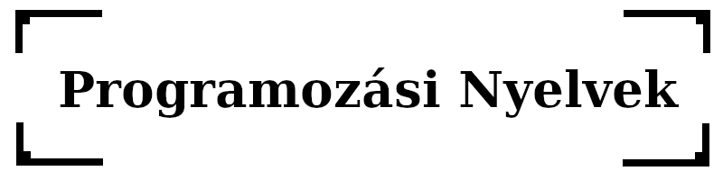
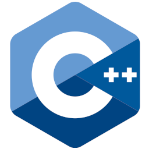

Programozási nyelvek
A programozási nyelv a számítógépes programok írására szolgáló jelölésrendszer.
Egy programozási nyelvet általában a szintaxis (forma) és a szemantika (jelentés) alapján írnak le. Ezeket általában egy formális nyelv határozza meg.
A programozási nyelvek általában absztrakciókat tartalmaznak az adatstruktúrák definiálására és manipulálására vagy a végrehajtás irányítására.
A nagyon korai számítógépeket, például a Colossust, áramköreik módosításával vagy fizikai vezérlőelemek beállításával programozták.
Valamivel később a programokat gépi nyelven lehetett megírni, ahol a programozó minden egyes utasítást olyan numerikus formában ír le, amelyet a hardver közvetlenül végre tud hajtani.
A következő lépés az úgynevezett második generációs programozási nyelvek vagy assembly nyelvek kifejlesztése volt, amelyek még mindig szorosan kötődtek az adott számítógép utasításkészlet-architektúrájához. Ezek azt szolgálták, hogy a program sokkal emberközelibbé váljon, és a programozót megszabadították a fárasztó és hibakockázatos címszámításoktól.
Az első magas szintű programozási nyelveket, vagy harmadik generációs programozási nyelveket az 1950-es években írták. A számítógépre tervezett korai magas szintű programozási nyelv a Pascal volt.
Ez után alakultak ki a ma használatos főbb nyelvi paradigmák, mint például a funkcionális programozás, vagy a objektumorientált programozás.
Magas szintű programozási nyelvek
C++
A C++ (kiejtése "C plusz plusz"), egy magas szintű, általános célú programozási nyelv, amelyet Bjarne Stroustrup dán informatikus alkotott.
Először 1985-ben jelent meg a C programozási nyelv kiterjesztéseként, azóta idővel jelentősen kibővült.
A C++-t rendszerprogramozásra, beágyazott, erőforrás-korlátozott szoftverekre és nagyméretű rendszerekre tervezték, a teljesítmény, a hatékonyság és a használat rugalmasságát tartva szem előtt.
Filozófia
- A programnak tényleges problémákon kell alapulnia, és funkcióinak azonnal hasznosnak kell lenniük a valós világ programjaiban.
- Minden funkciónak implementálhatónak kell lennie (ésszerűen nyilvánvaló módon).
- A programozók szabadon választhatják meg a saját programozási stílusukat, és ezt a stílust a C++-nak teljes mértékben támogatnia kell.
- Egy hasznos funkció engedélyezése fontosabb, mint a C++ minden lehetséges visszaélésének megakadályozása.
- Lehetőségeket kell biztosítania a programok különálló, jól definiált részekre való szervezésére, és lehetőségeket kell biztosítania a különállóan fejlesztett részek kombinálására.
- A típusrendszer implicit megsértése tilos (de az explicit, azaz a programozó által kifejezetten kért megsértések megengedettek).
- A felhasználó által létrehozott típusoknak ugyanolyan támogatással és teljesítményűnek kell lenniük, mint a beépített típusoknak.
- A nem használt funkciók nem lehetnek negatív hatással a létrehozott futtatható programokra (pl. alacsonyabb teljesítményben).
- A C++ alatt nem lehet nyelv (kivéve az assembly nyelvet).
- A C++-nak más létező programozási nyelvek mellett kell működnie, ahelyett, hogy saját különálló és inkompatibilis programozási környezetet alakítana ki.
- Ha a programozó szándéka ismeretlen, akkor a programozó számára tegye lehetővé, hogy kézi vezérléssel adja meg azt.
Java

A Java egy magas szintű, osztályalapú, objektumorientált programozási nyelv, amelyet úgy terveztek, hogy a lehető legkevesebb implementációs függőséggel rendelkezzen.
Általános célú programozási nyelv, amelynek célja, hogy a programozók egyszer írhassanak, majd bárhol futtathassanak egy programkódot.
Azaz a lefordított Java-kód minden olyan platformon futtatható, amely támogatja a Javát, anélkül, hogy újra kelleneírni, és fordítani.A Java-alkalmazásokat jellemzően bájtkódba fordítják, amely bármely Java virtuális gépen (JVM) futtatható, függetlenül a mögöttes számítógép architektúrától.
A Java szintaxisa hasonló a C és a C++ nyelvhez, de kevesebb alacsony szintű eszközzel rendelkezik.
Filozófia
| A Java nyelv létrehozásának öt fő célja volt |
|---|
| Egyszerűnek, és objektumorientáltnak kell lennie. |
| Robusztusnak és biztonságosnak kell lennie. |
| Architektúra-semlegesnek és hordozhatónak kell lennie. |
| Nagy teljesítményűnek kell lennie. |
| Értelmezettnek, szálakkal rendelkezőnek és dinamikusnak kell lennie. |
Python

A Python egy magas szintű, általános célú programozási nyelv.
Tervezési filozófiája a kód olvashatóságára helyezi a hangsúlyt, a kódblokkokat a sor eleji behúzásokkal lehet benne elválasztani.
A Python dinamikusan tipizált és szemétgyűjtőt (Garbage Collector) használ.
Több programozási paradigmát támogat, mint például a strukturált (különösen procedurális), objektumorientált és funkcionális programozást.
Filozófia
- A szép jobb, mint a csúnya.
- Az explicit jobb, mint az implicit.
- Az egyszerű jobb, mint a bonyolult.
- Az összetett jobb, mint a bonyolult.
- Az olvashatóság számít.